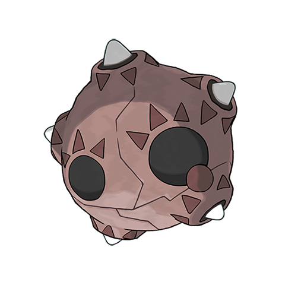

Minior Weakness (2x)
Water Electric Ice Rock Steel
#774 · Rock / Flying · Meteor Pokemon · Gen 7
Minior drops out of the ozone layer in a shell that weighs 40 kg, and what lands is a different fighter from the thing that cracked open. The shell is all defense. The core inside is all attack, and the switch happens by itself the moment its HP falls past half.

BST 440
Abilities: Shields Down · Evolution stage: none · Stats shown: Meteor Form
BST 500
Same species, same ability, same typing: Shields Down swaps the shell for the core at half HP.
Five weaknesses, five resistances and one immunity. The numbers came from running Rock and Flying through all 18 types by hand rather than from memory, and the Pokemon Type Chart is the same table, so any matchup here can be re-run cell by cell.
Water Electric Ice Rock Steel
Normal Fire Poison Flying Bug
Ground
Onix is the other Rock type on this shelf, Dragonite and Rayquaza cover the Flying half, and the Pokedex hub lists every species page that is live.
The Meteor Pokemon
Number 774 is a Rock and Flying type out of Alola, and it is one of the few Pokemon whose Pokedex entry explains its own mechanics. It lives in the ozone layer until the shell around it gets too heavy, then falls. The shell shatters on impact, and a small core is left sitting in the crater, in one of seven colours.
Two things are worth knowing before anything else. Minior has no evolution at any level, and the species has exactly one ability. Everything that makes it interesting happens inside a single battle, when the shell breaks and the Pokemon underneath starts hitting back.
Meteor form is the one you catch: 60 HP, 60 Attack, 100 Defense, 60 Special Attack, 100 Special Defense and 60 Speed, for a total of 440. Core form is a different animal. Attack and Special Attack rise to 100 each, Speed jumps to 120, and both defenses fall to 60. The total lands at 500.
Sixty points of bulk turn into sixty points of offense and speed. Nothing else on the stat line changes, which is why the same Pokemon plays like two different team members depending on where its HP bar happens to be. The Minior Core Form Base Stats sit below the Meteor numbers so you can read the swap side by side.
The ability is Shields Down and there is no button for it. Above half HP, Minior stays in Meteor form and tanks what it can. Cross 50 percent, and the shell breaks: the core is exposed, the attacking stats double up, and the Pokemon stays exposed for the rest of that battle. Healing back to full does not rebuild the shell.
That makes the first half of every fight a defensive phase whether you wanted one or not, and the second half a race to finish before the core takes a hit it cannot afford. Bringing Minior in early spends the shell on nothing. Bringing it in late means the core arrives with very little HP to work with.
Double damage comes from Water, Electric, Ice, Rock and Steel, and none of those five is rare in ranked play. The shell shrugs off Normal, Poison, Fire, Flying and Bug at half strength instead. Ground is the odd one out: the Flying half of the typing cancels it outright, so Earthquakes do nothing at all.
That immunity is the reason to use it. Earthquake is the most common physical attack in the game, and Minior is one of the few Rock types that can stand in front of one. Water and Steel are the price of admission, and both are common coverage picks that hit the shell as hard as they hit the core.
Minior arrived in Pokemon GO in October 2026, and it does not spawn like an ordinary wild Pokemon. It shows up during real meteor showers, on dates the official announcement lists in advance: Orionids from October 19 to 24, Leonids from November 14 to 19, Geminids from December 11 to 16, then the Eta Aquariids, Southern Delta Aquariids and Perseids in 2027.
One core colour debuts per shower. Inside a shower window the in-game sky lights up between 5:00 p.m. and 9:00 p.m. local time, wild encounters get more likely, and each catch pays extra Stardust. The form change works in GO too, but only against Team GO Rocket, team leaders and the GO Battle League, and Minior is not eligible for the 2027 Latin America International Championships.
The core comes in red, orange, yellow, green, blue, indigo and violet. All seven are identical in battle, so the colour is a collecting target rather than a strategy one. The shiny breaks the pattern: a shiny Minior has a black core instead of a coloured one, and that is the entire visual difference. The same odds logic that governs every recolour applies here, which the Pokemon Shiny Odds page breaks down by game.
In the main games the core is what you are left looking at once the shell comes off. In GO the colour is the only thing that tells most Minior apart, which turns every encounter into a two-second colour check before the throw.
The shell gives nothing away. A shiny Minior's Meteor Form is the same rock, the same four plates, the same five white spikes and the same pair of dark eyespots, so the form you meet in the wild has no tell at all. The core is the only thing that changes, and the core sits under the shell until HP drops below half.
All seven cores share that single shiny. Red, orange, yellow, green, blue, indigo and violet each come out black instead of keeping a rarer version of their own colour, which is why a shiny hunt here is not colour-specific: one black core covers all seven. Older builds of Pokemon HOME tinted the shiny to hint at the hidden colour, and that tint was later removed, so every modern shiny Minior looks the same.
Which means the check happens mid-battle. Shields Down has to break the shell before the colour is visible, so a shiny hunt in the main games is a fight long enough to cross half HP. Pokemon GO runs the same rule: the switch is a battle-only form change, so a wild catch shows Meteor Form and the core only turns up once the Pokemon fights.
As a raid attacker, no. Third-party attacker lists file it around 102nd among Rock types and 183rd among Flying types, well behind the Rock and Flying attackers people actually build. Its GO stat line is 218 Attack, 131 Defense and 155 Stamina: enough attack to matter and not enough bulk to sit through a raid boss charged move.
Where it earns a slot is player-versus-player. Rock and Flying is an odd defensive pairing in GO, and the Ground immunity survives the translation as a heavy resistance, so the coverage most teams lean on to break Rock types barely scratches it. The level 50 ceiling with perfect IVs is 2,591 CP, and the usual PvP spreads sit at 1/15/13 for Great League (1,499 CP) and 7/15/14 for Ultra League (2,495 CP). Until the meta settles, treat it as a collector's pick with a real but narrow PvP case.
Minior is a late-game cleaner that has to survive a hit before it becomes one. Stealth Rock takes a chunk out of the shell on the way in, and every point the shell soaks is a point the core does not have to spend later. Bring it in on something it resists, clear hazards first, and save it for the part of the match where 120 Speed actually matters. If you are still picking the other five slots, the Pokemon Team Picker handles that part.
The typing does a lot of the work by itself: a Ground immunity, five resistances and a Rock STAB that hits Flying, Fire, Ice and Bug. The Flying half also gives it a second attacking type, which is unusual for a Rock type and covers the Grass and Fighting switch-ins that would otherwise wall it.
There is no Minior evolution. The species is a single stage with no level to grind toward, no stone to hunt and no second form waiting at the end of a chain. Nothing about it changes once the ball closes: the only transformation on offer is the one Shields Down forces halfway through a fight.
For a Nuzlocke run that cuts both ways. A single-stage Pokemon is at its ceiling the moment you catch it, which is convenient, but there is no second body to fall back on if the first one faints. The Minior evolution chart is one box, and it stays one box in every generation the Pokemon appears in.
FAQ
Rock and Flying, with no third type and a single ability. That pairing gives it five weaknesses, five resistances and a Ground immunity.
Water, Electric, Ice, Rock and Steel each deal double damage. Normal, Fire, Poison, Flying and Bug are halved instead, and Ground is cancelled completely by the Flying half.
It does not evolve. Minior is a single-stage species with no level, item or trade requirement, and nothing evolves from it either.
Shields Down, and nothing else. There is no hidden ability. It keeps Minior in Meteor form above half HP and switches it to Core form below half, permanently for that battle.
440 in Meteor form and 500 in Core form. The core version trades 40 Defense and 40 Special Defense for 40 Attack, 40 Special Attack and 60 Speed.
Seven cores: red, orange, yellow, green, blue, indigo and violet. The shiny is black, and the colour changes nothing about its stats or typing.
Wait for a meteor shower. The 2026 windows are October 19 to 24 for the Orionids, November 14 to 19 for the Leonids and December 11 to 16 for the Geminids, with boosted encounters from 5:00 p.m. to 9:00 p.m. local time.
No. It is a regular Rock and Flying species from Alola, number 774 in the National Pokedex, and it is found in the wild rather than in a legendary encounter.
Not from the shell. Meteor Form is identical either way, so the difference only appears once Shields Down breaks the shell and the core shows — and that core is black rather than coloured. Every one of the seven colours uses the same black shiny.
It is a niche pick, not a raid staple. Third-party rankings put it near 102nd for Rock and 183rd for Flying, the stat line is 218/131/155, and the level 50 ceiling is 2,591 CP. The Ground resistance is the part worth building around.
One box. Minior is a single-stage species, so the chart is the Pokemon, its Meteor and Core forms, and nothing after that.